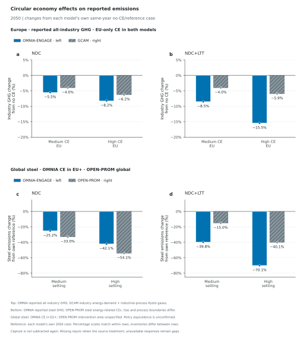

Emissions responses: GCAM and OPEN-PROM comparisons
Top: combined European cement, iron-and-steel and aluminium emissions, EU-only CE in both models; OMNIA sector GHG versus GCAM sector CO2, including a cement-energy proxy. Bottom: global steel, OMNIA CE in EU+ versus OPEN-PROM. Gas/process inventories and policy coverage remain different. Each model uses its own 2050 reference; scales match within each row. OMNIA NDC+LTT aluminium blanks retain the provisional-zero assumption.
How do reported emissions respond within each model and comparison scope?

Emissions responses in 2050, with NDC on the left and NDC+LTT on the right. Panels a,b compare the combined cement, iron and steel, and aluminium emissions response for medium/high EU-only CE, pairing solid OMNIA-ENGAGE bars on the left with hatched GCAM bars on the right. OMNIA sums the three reported Emissions|GHG|Industry subsector totals in MtCO2e/yr. GCAM sums four reported Emissions|CO2 series in Mt CO2/yr: Energy|Demand|Industry|Non-Metallic Minerals (a cement-energy proxy), Industrial Processes|Non-Metallic Minerals|Cement, Energy|Demand|Industry|Iron and Steel, and Energy|Demand|Industry|Non-Ferrous Metals|Aluminum. GCAM therefore includes cement energy and process CO2, but only the reported energy CO2 series for steel and aluminium. The supplied non-metallic-minerals final-energy parent equals its cement child in the checked source rows, supporting the cement-energy mapping for this export. Sector GHG totals are not supplied by GCAM, so its CO2 inventory is not harmonised to OMNIA's sector GHG. Other industry is excluded from both upper-row totals. Sector quantities are summed before computing the response against the same model's combined three-sector no-CE reference; sector percentages are not averaged. OMNIA sums EUE, EUM and EUW; GCAM selects EU-27 once. These regional boundaries differ slightly. Panels c,d compare global steel responses, pairing OMNIA-ENGAGE CE in the EU plus partners (EU+) with OPEN-PROM medium/high scenarios. The global output scope is distinct from the policy adoption area. OPEN-PROM's intervention definitions and adoption area are undocumented, so medium/high labels do not establish policy equivalence. OMNIA sums all 28 model regions and selects reported steel GHG; OPEN-PROM selects World and steel energy-related CO2. OPEN-PROM has no steel-specific process-emissions or GHG total, and its energy-related CO2 is not harmonised to OMNIA's reported steel GHG. All bars show 100 × (scenario emissions − own reference emissions) / own reference emissions, using the same model, climate pathway, geography, emissions definition and year for numerator and denominator. References are each model's own no-CE/reference case; no absolute-level alignment is assumed. The rows have different geography, sector scope, policy coverage and emissions inventories. Percentage scales match within each row and are independent between rows. Gas coverage, GWP conventions and process boundaries remain source-defined. Reported negative emissions and signed increases are retained; carbon capture is not subtracted again. Endpoint markers identify observed values, including zero, and signed labels are rounded to 0.1%. Missing responses remain gaps. With the configured zero treatment, blank OMNIA LTT aluminium inputs in all three EU regions use provisional zeros; this does not establish physical zero emissions. Original source quantities, references, variables, regions, units and missing treatments are retained in the source data. European all-industry rows and sector decompositions remain unplotted context, identified by PlotRole=context; only three-sector net rows are plotted in the upper row. The lower row excludes OMNIA's EU-only CE cases.